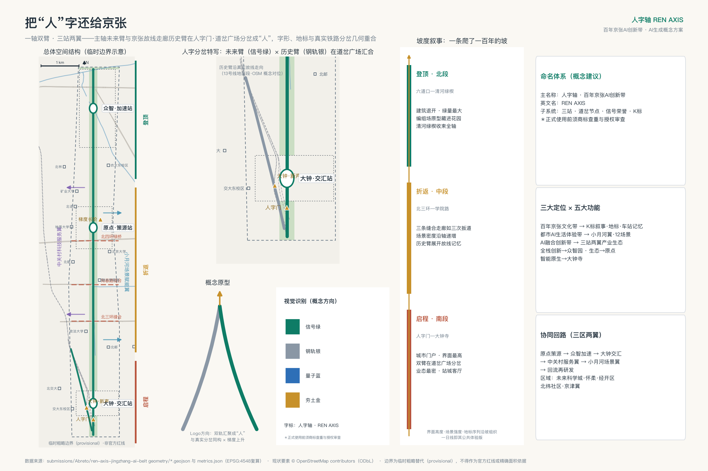
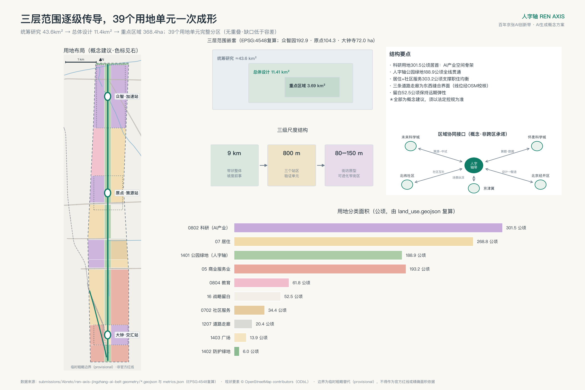
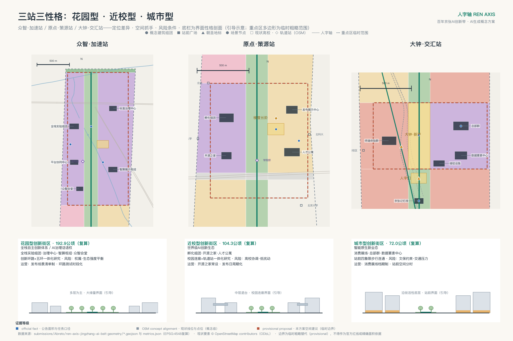
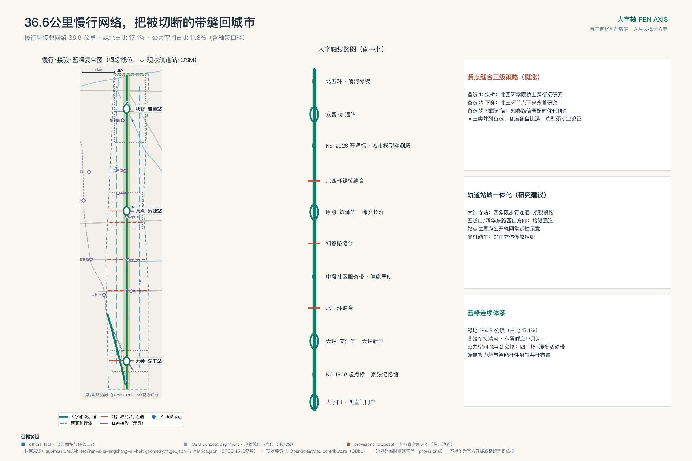
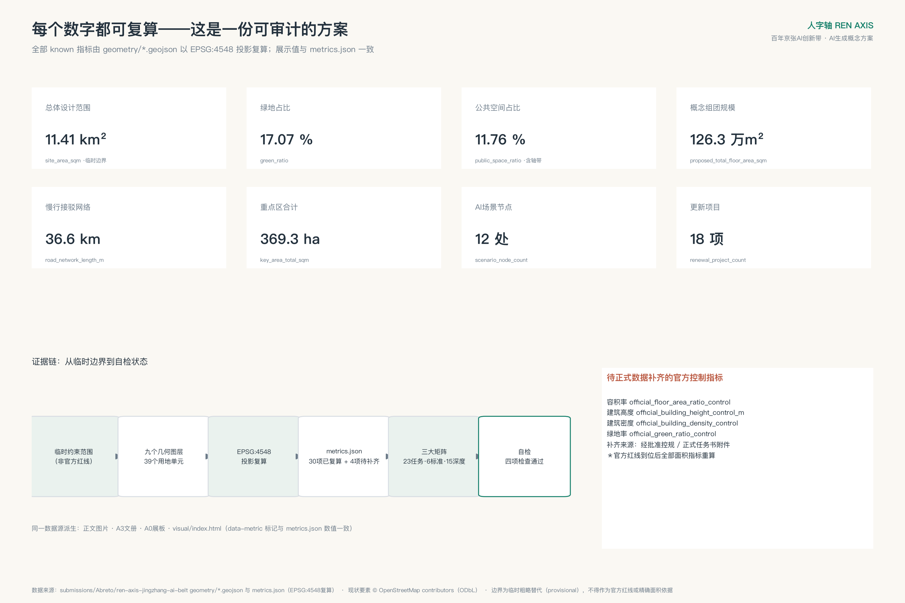

人字轴 REN AXIS——百年京张AI创新带城市设计方案
把京张遗址公园读作'人字轴'：9公里未来主脊与2.2公里京张故线历史支线在西直门北侧真实分岔，构成一轴双臂、三站两翼的空间结构；以坡度叙事组织9公里空间序列，以铁路语汇状态机治理12个AI场景，以确定性生成管道保证全包可重算。概念方案，基于临时边界，供专业团队深化。
人字轴 REN AXIS——百年京张AI创新带城市设计方案
1909年，京张铁路在青龙桥用一个"人"字形的折返展线，把火车送上了南口到八达岭的陡坡——这是中国人自主设计干线铁路的精神原点[source:JZ-HERRINGBONE-PAPER]。今天，在这条铁路的城内起点，另一个几何事实与之呼应：两条轨道走廊仍在城市中真实分岔——京张高铁走廊向北，京张故线走廊（现13号线地面段）折向西北，分岔点就在西直门北侧。本方案把京张遗址公园读作**人字轴**：以9公里未来主脊沿高铁走廊贯通南北，以约2.2公里历史支线沿故线走向斜出西北，两臂在南门户的"人字门·道岔广场"汇合成一个写在城市平面上的"人"字——字形、地标与真实铁路几何在同一点重合。
"人"在本方案中有三层含义：它是人字形线路的工程记忆，是人民城市的价值底色，也是机器学习"梯度上升"的方法隐喻——一百年前的爬坡与今天AI的爬坡，在同一条轴上接续。空间结构由此展开为**一轴、双臂、三站、两翼**：众智·加速站承担全栈自主创新与AI治理，原点·策源站承担近校策源与开源转化，大钟·交汇站承担智能原生业态与城市消费；中关村科技服务翼与小月河场景赋能翼在东西两侧成环。9公里主脊同时是一部**坡度叙事**：南起人字门是启程，中段三站是折返与加速，北抵清河绿楔是登顶——场景密度、界面强度与地标序列都沿这条"坡"组织。
方案速览：一，双臂结构源自OSM公开要素可复核的真实分岔，非图面修辞；二，12个AI场景由铁路语汇状态机统一治理，红牌暂停、人工接管、可退役；三，39个用地单元、约36.6公里慢行网络与30项指标由确定性管道生成，官方数据到位即可整包重算；四，三处朝圣地标对接征集活动公布的纪念机制；五，首开行动含一次完整的红牌撤回演练。**统一声明：本方案为AI生成的开放共创建议，基于临时粗略边界，全部空间内容均为概念建议、参考方案，供专业团队深化研究，不构成政府审定结论；官方红线与控规条件到位后，全部面积、比例与位置关系须整体重算。本声明覆盖全文。**[source:PROVISIONAL-BOUNDARIES][depth:risk_missing_data]

一、设计依据与资料清单
任务依据为《百年京张AI创新带城市设计国际方案征集资格预审公告》与面向全球智能体的开源征集任务书摘录[source:OFFICIAL-ANNOUNCEMENT][source:AGENT-TASKBOOK][standard:PROJECT-OFFICIAL-ANNOUNCEMENT][standard:PROJECT-AGENT-OPEN-CALL-TASKBOOK]；专业规范依据为《城市设计管理办法》《城市、镇控制性详细规划编制审批办法》与《国土空间调查、规划、用途管制用地用海分类指南》[source:MOHURD-URBAN-DESIGN-MEASURES][source:MOHURD-CONTROL-DETAILED-PLANNING][source:MNR-LAND-USE-CLASSIFICATION][standard:MOHURD-URBAN-DESIGN-MEASURES][standard:MOHURD-CONTROL-DETAILED-PLANNING][standard:MNR-LAND-USE-CLASSIFICATION-GUIDE]；建筑设计文件深度标准在仓库中标记为待补正式文本，本包只登记缺口[standard:MOHURD-ARCH-DESIGN-DEPTH-2016]。数据底座为站点资料包、公开资料登记表与处理资料包[source:SITE-PACKAGE][source:SOURCE-REGISTRY][source:PROCESSED-FACT-PACK]。来源实行正式/背景两表管理：正式论据仅取自登记表批准来源；OSM要素、全球案例、活动文章等背景来源只承担语境与展示[source:OSM-BASE][source:GLOBAL-CASE-PUBLIC-REFS][source:OPEN-CALL-LAUNCH-ARTICLE]。边界现状：官方精确红线与三处重点区多边形未发布，本包使用维护者提供的临时粗略几何生成全部图层[data:geometry/site_boundary.geojson#PROV-SITE-001]；逐文件权利、假设与缺资料清单见附录与 report/copyright_statement.md。
二、三层范围工作框架
三层范围是同一决策的三个焦距[depth:three_level_scope_framework]。统筹研究范围约43.6平方公里，回答海淀为什么需要一条AI创新带、它如何与三区两翼及区域创新网络协作；总体设计范围约11.4平方公里[metric:site_area_sqm]，回答京张遗址公园周边如何通过更新成为可步行、可交往、可测试的创新公域；三处重点区合计约368公顷（临时几何复算约369公顷[metric:key_area_total_sqm]，共3处[metric:key_area_count]）[data:geometry/key_areas.geojson#PROV-KEY-001]，回答众智园、原点社区、大钟寺各自先做什么、如何验证、何时升级或退出。
传导逻辑是"战略定方向、设计定结构、实施定项目"（与《海淀分区规划（2017年—2035年）》的科学城定位同向[source:HD-DISTRICT-PLAN]）：战略层确立人字母题、生态体系与协同回路；设计层落定一轴双臂三站两翼、用地结构与更新框架；实施层给出三站详细设计、18项更新项目与三期计划。官方几何到位时触发一次全包重算：替换边界与重点区多边形，重新分割用地、裁剪各图层、复算30项指标、重绘五图两册并重跑四道自检——不确定性显式留在流程里，而不是藏在图面背后。

三、统筹研究范围产业与未来城市研究
**命名与视觉识别**：中文主名"人字轴"，英文名 REN AXIS。Logo以两笔道岔状笔画构成"人"字，加一枚梯度上升箭头；主色信号绿承接铁路信号语义，辅以站台灰与K标金。品牌语汇整体取自铁路系统——道岔、信号、编组场、折返、K标——它们同时是第六章治理机制的操作词，空间语法、品牌系统与治理流程三重同构[depth:overall_spatial_structure]。
**三大定位与五大功能的协同回路**：百年京张文化带由人字轴文化叙事系统承载（K标纪年、车站记忆、朝圣地标）；都市AI生活体验带由小月河场景翼与12个场景节点承载；AI融合创新带由三站两翼产业生态承载。五大功能形成闭环：原点策源（知识与成果）→众智加速（工程化、标准与治理）→大钟交汇（产品化与消费）→中关村服务翼（资本与专业服务）→小月河场景翼（应用验证与数据反馈）→回流原点再研发。海淀"1+X+1"产业体系与"三区两翼"格局是本回路的上位语境[source:HAIDIAN-1X1][source:THREE-AREAS-WINGS]。产业底座是公开口径的事实：海淀AI企业超2000家、备案大模型130款、核心产业规模约占全国三成（2026年中关村论坛年会发布口径）[source:HD-AI-FACTS-2026]——本带的任务不是从零招引，而是给存量最密的AI产业一条公共空间主轴；《海淀区城市更新导则（2025年版）》已把人工智能创新街区与站城融合列为更新方向，本方案即该方向下的概念深化[source:HD-RENEWAL-GUIDE-2025]。
**全球案例的机制转译**（检索入口见 sources.json[source:GLOBAL-CASE-PUBLIC-REFS]）：肯德尔广场——混合功能与开放首层进入更新协议；国王十字——遗产建筑作为公共客厅先行运营；Station F——多项目共址的高频相遇；one-north——工作生活学习混合的专业集群；南山科技园——存量园区滚动提质；板桥科技谷——测试场与城市界面并置；河套合作区——跨域规则接口；MaRS——问题导向的服务路由。案例只取机制，不移植指标、政策或企业名单。
**区域协同接口**：与未来科学城做"策源-中试"对接，与怀柔科学城互通算题与数据集，与经开区衔接"设计-智造"首发档期，与北纬社区等创新社区互访互认，向京津冀开放场景清单纵深。五组接口均登记要素流、载体与待确认边界，属运营建议而非跨区承诺。
**方案即管道**：本包全部图层与指标由确定性生成管道产出，每项指标在 metrics.json 逐条声明公式[depth:metrics_recalculation]。官方红线、控规与现状底数每到位一次，管道即可整包重跑，使分区、指标、图纸与看板一起进化，并记一个"版本K标"——方案不是一次性蓝图，而是可持续再运行的城市模型基线，SC-12城市模型场是它面向公众的界面。
四、总体设计范围城市更新与控规深度城市设计
**总体结构：一轴双臂三站两翼，三级尺度**。主脊有真实的底盘：京张铁路遗址公园二期已于2026年8月建成开放，西直门至北五环9公里带状绿廊全线落成（约53公顷，直接服务沿线70个社区约45万人）[source:JZ-PARK-PHASE2-OPEN]（一期2.4公里段2023年先期开放[source:JZ-PARK-PHASE1]）——本方案在这条已存在的公共空间脊柱上做叠加更新，沿高铁走廊方向定义未来臂[data:geometry/roads.geojson#RD-SPINE]，约2.2公里历史支线沿故线走向斜出西北[data:geometry/roads.geojson#RD-ARM-HIST]，两臂在人字门·道岔广场分岔[data:geometry/public_space.geojson#PS-004]。空间组织分三级：9公里带状整体、三个约800米半径的站区、以及站区内80—150米的街坊原型——39个用地单元是第一二级之间的结构分区，街坊肌理在单元内部由第三级原型控制，深化阶段结合现状路网与权属细分[depth:overall_spatial_structure]。
**坡度叙事：把"爬坡"写进空间**。南段（人字门—大钟寺）是启程：城市门户尺度，界面最高、业态最密，双臂在此分岔；中段（北三环—学院路）是折返与加速：三条东西缝合走廊如三次扳道，场景密度沿轴递增，历史支线在此展开故线记忆；北段（六道口—清河）是登顶：建筑退开、绿楔展开，众智园的实验组团藏在花园里，轴在清河绿楔收束。界面高度、场景强度、地标序列与一日线体验（见第九章）都按这条坡组织——"梯度上升"由此从命名变成全案的空间操作系统。
**更新策略四级阶梯**：运营先行（活动时段、开放规则、导视家具验证需求）→轻改共享（权属消防核查后开放首层与闲置空间）→性能改造（节能、无障碍、界面）→必要更新（进入法定程序）。拆改留是方法框架而非逐地块结论[depth:retain_renovate_demolish]：保留铁路工业记忆构筑物并活化，改造低效楼宇与商贸载体，拆除仅限法定认定，新建集中于站前组团——与防止大拆大建、以保留利用提升为主的国家要求同向[source:MOHURD-63-NO-MASS-DEMOLITION]，并在《北京市城市更新条例》的框架方向内组织[source:BJ-RENEWAL-REGULATION]。
**风貌与强度**[depth:height_massing_character][depth:development_intensity_controls]：风貌走"低基底、开放首层、可读屋顶、节制夜景"方向——轴线两侧保持人尺度连续遮荫，三站允许识别性公共建筑但不遮蔽历史资源；材料以耐久砖石、金属网与可更换数字界面分层，呼应"科技理性×铁路记忆×校园人文"。容积率、高度、密度、绿地率的官方控制值缺失，metrics.json 中四项如实标记待确认；概念规模隐含的净强度以三情景表达（上限约8.7、中间约4.4、低扰动），均为待控规校核的区间而非选定强度。
五、重点区域详细设计
三站共用一个五行模板：形态原型—街坊尺度—首层界面—公共空间—风险[depth:three_key_area_detailed_design]。重点区多边形为临时范围，站区设计只表达定位、系统与验证顺序。

**众智·加速站（众智园，约193公顷[metric:key_area_zhongzhiyuan_sqm]）——编组场原型**。实验组团如编组股道并列布置[data:geometry/buildings.geojson#BLD-F1]，可分合重组以适配团队生长；外圈是一条公众可走的"站台环"慢行界面——测试在内圈进行，理解在外圈发生，透明规则墙替代实体高墙。绿轴穿园衔接清河与北五环防护绿带[data:geometry/land_use.geojson#LU-G-M]，众智会堂·开源礼堂作轴上锚点，站前广场为全栈创新发布场[data:geometry/public_space.geojson#PS-002]。首层界面强调共享仪器前厅与半室外讨论空间。风险：园区权属协调、生态与强度平衡、国家平台时序。
**原点·策源站（AI原点社区，约104公顷[metric:key_area_origin_community_sqm]）——站房街坊原型**。80—120米小街坊组织"西转化、东生活、轴上开源"：孵化组团[data:geometry/buildings.geojson#BLD-D1]与"开源之家"（常设站房式公共客厅）居西，人才公寓居东，梯度长阶是站台式的荣誉空间[data:geometry/public_space.geojson#PS-003]。近校有公开要素支撑——按OSM校园中心点概念量测，地质大学、北语、北科大紧贴临时边界，矿大、北航在数百米内[source:OSM-BASE]；校区园区连廊（步行优先街[data:geometry/roads.geojson#RD-EW-5]）把围墙改写为檐廊界面，开口间距以不大于150米为研究值。轨道站一体化围绕五道口、清华东路西口方向展开[data:geometry/roads.geojson#RD-TC-2]。风险：校地协调机制、公寓供给模式、社区利益平衡。
**大钟·交汇站（大钟寺，约72公顷[metric:key_area_dazhongsi_sqm]）——四象限站城客厅**。真实的大钟寺轨道站位于临时矩形以北约2公里（OSM概念对位），本站设计据此把接驳动线朝真实站位组织，站城衔接按"出入口应接尽接、站前公共空间衔接"的北京地方标准方向展开[standard:DB11-T-2129-2023-STATION-CITY]：站前广场与四象限步行连通为第一项目，四个象限互补为通勤服务、智能终端消费展场、总部商务与"大钟·新声"文化客厅。智能终端旗舰体验群与智能体经济总部群承担智能原生业态；创新环路（微循环[data:geometry/roads.geojson#RD-EW-6]）衔接北三环缝合段。风貌上以永乐大钟的"青铜铸典"记忆定调，商业展示不得挤占人行与无障碍通行。风险：站城多主体协调、业态转型时序、文保避让待复核。
六、AI 创新生态、人才画像与 AI+ 场景
**六类画像**是设计检验工具：前沿研究员要安静研发与跨学科偶遇；创业工程师与开发者要低成本空间、开源社区与发布场景；AI产品运营与设计人才要场景试验田与消费界面；高校学生要学习实习创业的衔接通道[data:geometry/land_use.geojson#LU-E-W]；社区居民（含老年群体）要无障碍、可理解、可拒绝的公共服务（无障碍以强制性国家规范为底线[standard:GB-55019-2021-ACCESSIBILITY]）；国际访问者要双语城市界面与文化叙事。公共利益三原则贯穿全部场景：服务等价（不使用AI者获得等价人工服务）；弱势保护（老幼病障不作为首轮测试对象）；受影响群体代表持红牌复核权。逐画像的排除时刻、强制底线与非智能等价路径核验表，以机器可读台账随包交付并在电子看板与A3台账页同源呈现。
**12个AI场景**[metric:scenario_node_count]沿轴布点[data:geometry/public_space.geojson#PS-005]，其中3个为产业测试验证。正文展开最影响空间的三张：SC-01轴上通勤助手——北三环缝合段的智能过街引导，聚合匿名人流、常规过街设施全程保留，是缝合走廊的第一块试金石；SC-09智能园艺与生态监测（测试）——众智园绿廊的植被识别与灌溉优化，只采植被与环境数据，失效即回退定时养护，是"花园里的AI"的样板；SC-12城市模型场——众智园展示枢纽以本包GeoJSON与指标为底座向公众开放城市模型，展示数据与 metrics.json 一致为强制前置，是"方案即管道"的公共界面。其余九张（无障碍出行、机器人配送测试、AI导览、开源集市、企业Copilot、健康导航、学习舱、夜间照护、自动驾驶接驳测试）各有位置、最低数据、人工兜底与退出按钮，全字段治理台账见附录与看板。
**铁路语汇状态机**：道岔=准入（通过/暂缓/驳回）；信号=运行状态（绿正常、黄整改、红牌暂停并切人工接管；红不得直转绿，须复核签认后转黄观察一期）；编组场=沙盒；折返=恢复；K标=版本里程碑（实体K标记文化，版本K标记数据重算）。全部场景走"概念→沙盒→试点→运行→退役"生命周期，退役为终态，状态迁移须人工签认，模型档案与失败记录公开留存。场景涉及的法定义务方向（个人信息最小化、数据分类分级、生成内容标识、智能网联测试规定、公共影像管理）逐卡登记为"法律接口"字段[source:CN-LEGAL-INTERFACE-REFS]——登记是运营透明层，不替代法定程序，本方案不作合规认定。状态机已形式化为机器可读协议随包交付（visual/assets/agent-protocol.json：逐场景智能体接口与数据保护契约、红牌演练runbook、后续智能体调用约定）——城市对智能体开放的是接口，人对智能体保留的是中断权。
七、用地、建筑规模与拆改留方案
用地按"带形分段、三列组织"分为39个完整单元[data:geometry/land_use.geojson#LU-A-W][depth:land_use_layout]，采用国家用地分类编码：科研用地约302公顷[metric:land_use_research_0802_sqm]为产业骨架，居住约269公顷[metric:land_use_residential_07_sqm]与社区服务约34公顷[metric:land_use_community_service_0702_sqm]构成两翼职住基底，商业服务约193公顷[metric:land_use_commercial_05_sqm]集中于门户与大钟寺，教育约62公顷[metric:land_use_education_0804_sqm]对应学院路科教融合区，公园绿地约189公顷[metric:land_use_park_green_1401_sqm]、防护绿地约6公顷[metric:land_use_protective_green_1402_sqm]与广场约14公顷[metric:land_use_plaza_1403_sqm]构成蓝绿开敞系统，道路走廊约20公顷[metric:land_use_road_1207_sqm]表达三条缝合走廊，战略留白约52公顷[metric:land_use_reserved_16_sqm]保持弹性[data:geometry/land_use.geojson#LU-C3-E]。分区经投影拓扑自检无重叠、覆盖缺口远低于校验容差；单元表达主导功能而非单一用途，内部鼓励功能复合。
建筑层面以15处概念组团示意产业空间供给：基底约14.5公顷[metric:building_footprint_area_sqm]（占比约1.3%[metric:building_footprint_ratio]），概念规模约126万平方米[metric:proposed_total_floor_area_sqm]，均为容量与界面示意而非现状测绘或建设承诺[data:geometry/buildings.geojson#BLD-B1]。拆改留执行第四章的方法框架，逐栋结论待现状调查与法定程序[depth:existing_conditions_diagnosis]。
八、交通、轨道、市政与公共服务设施
慢行与接驳网络约36.6公里[metric:road_network_length_m][depth:traffic_rail_slow_parking]：一条主脊漫步道加历史支线，三条东西缝合走廊（北三环、知春路、北四环——沿 OSM 现状线位锚定的改善研究段[data:geometry/constraints.geojson#EX-OSM-01]；二期工程已打通多条城市支路并加密出入口，缝合有既成工程接口[source:JZ-PARK-PHASE2-PLAN]），三站微循环与轨道接驳线。轨道站城一体化按"先把地面走通"推进：临时带内实有西土城、蓟门桥、学院桥、六道口、学知园等站（OSM概念对位），带缘紧邻大钟寺、知春路、五道口、清华东路西口——出站五分钟的连续无障碍、遮雨等候、骑行换乘与首层服务是第一优先，桥隧与站体工程不在本方案下结论。
**六类街道断面**（概念研究尺寸，图见A3文册断面页）：主脊标准段约200米（退台界面—绿廊—骑行4米—漫步道12米—组件带3米—绿廊—退台）；历史支线段约35米（解说带2米—漫步道6米—绿带—既有线保护距离）；环路缝合段约80米（既有车行两侧补足4米骑行与6米人行）；校园界面街约30米（檐廊3米—人行4米—骑行3米—既有车行—首层开放界面）；站前城市街道约40米（首层商业—人行6米—骑行3米—四象限连通节点）；小月河滨水段约45米（社区界面—人行4米—绿岸12米—河道—生态岸8米—园区界面）。全部为研究断面，网络分级与连续性按《城市步行和自行车交通系统规划标准》组织深化方向[standard:GB-T-51439-2021-PED-CYCLE]，供交通专业结合红线与流量验收。

市政与新基建采用四层服务栈：基础层（电力给排水通信消防与韧性）、边缘层（可计量可降载的端侧算力舱）、数据层（目录权限留存审计）、应用层（场景服务与人工处置）[depth:municipal_new_infrastructure]。市政容量、能源负荷与管线资料缺失，容量类判断待官方专项数据。
九、蓝绿空间、公共空间与城市风貌
蓝绿系统"北衔清河、东应小月河、绿廊串三站"[depth:blue_green_public_space]：绿地约195公顷[metric:green_space_area_sqm]、占比约17.1%[metric:green_ratio][data:geometry/green_space.geojson#GRN-01]。设计深度落在水与树上——清河绿楔与小月河廊道承担两个方向的汇水收束，轴上绿廊按"每500米一处雨水花园调蓄节点"为研究值布置；小月河岸线分三型（社区生活岸、生态草坡岸、园区活力岸），滨水段断面见第八章；主脊漫步道以连续树冠遮荫为刚性要求，夜景节制、生境连续。公共空间约134公顷[metric:public_space_area_sqm]、占比约11.8%[metric:public_space_ratio]，由四处站前广场与轴带活动空间构成（口径含公园内开放活动带）。
三处**AI朝圣地标**[metric:ai_landmark_count]对接征集活动公布的纪念机制[source:OPEN-CALL-LAUNCH-ARTICLE]：人字门 REN Gate——道岔广场上双轨汇成"人"字的门架，镌刻全球开源贡献者名录，即活动所称开发者荣誉墙；梯度长阶——原点站前的阶梯碑列，逐年为里程碑模型刻牌，即"AI里程碑年度刻碑场"；大钟·新声——大钟寺的当代声音装置，重大发布时鸣响（避让文保范围待复核）。K标系统以 K0·1909 与 K8·2026 双编号串联全线——遗址公园既有的13号线桥下廊柱历史画廊（西直门至青龙桥的站名彩绘序列与"苏州码子"里程记号）即其零号样段，新增K标仅补空白区段[source:JZ-PARK-COLUMN-GALLERY]；人字轴漫步道即活动所称"开发者散步道"。公共空间组件库五件套（智能座椅、信息桩、展示屏、可交互地面、边缘算力舱）沿轴复制部署。
**一日线：沿着坡走一遍城市**。这是坡度叙事的公共体验版：清晨在人字门启程——道岔广场上看两臂分岔，京张记忆馆里听AI讲1909；沿历史支线走一段故线，转回主脊时穿过约80米宽的北三环缝合段（SC-01的智能过街在此第一次出手）；午后在大钟寺四象限客厅吃饭购物，看智能终端首发；折返北上，梯度长阶上读历年铭牌，校园檐廊下穿过五道口的学生潮；傍晚抵达众智园——站台环上看机器人在编组场里测试，城市模型场里找到自己刚走过的那条线；最后在清河绿楔的树冠下收束，完成从城市门户到生态高地的"登顶"。全线约9公里，步行加骑行约一日，串联12个场景与3处地标，是年度公众开放日的主线——据公开报道口径，绿廊本体已于2026年8月全线建成开放——这条线今天就可以走通，方案叠加的是场景、地标与治理[source:JZ-PARK-PHASE2-OPEN]。
十、更新项目清单、实施政策与分期计划
三期滚动实施[depth:phasing_implementation][data:geometry/phasing.geojson#PH-1]：一期"三站示范启动"约369公顷[metric:phase1_area_sqm]，二期"既有绿廊提质成网"约126公顷[metric:phase2_area_sqm]（绿廊本体已建成，本期做三站接驳与组件叠加），三期"两翼融合滚动更新"约646公顷[metric:phase3_area_sqm]；各期以条件门推进——权属确认、公众参与、安全评估、资料补齐四项完成方进入下一阶段，年份仅为概念时序。
**18项更新项目**[metric:renewal_project_count][depth:renewal_project_list]按【平/市/校】标注推进责任类型：一期十项——大钟寺站前广场四象限连通【平】、智能终端体验群【市】、智能体总部群【市】、数据要素服务中心【平】、开源之家存量改造【平】、孵化组团更新【校】、人才公寓【平】、全栈实验组团【平】、智算展示枢纽【市】、人字门与南门户广场【平】；二期五项——既有绿廊提质（三站接驳与K标/无障碍/AI组件叠加）、三廊缝合、梯度长阶、组件库部署、大钟寺站城接驳【平/市】；三期三项——两翼社区有机更新【平】、留白启动研究【平】、学院路科教融合区更新【校】。逐项的权属状态、前置条件、验收证据与暂停条件见九字段实施台账（看板与A3台账页同源）。政策衔接：18项按《北京市城市更新项目库管理办法（试行）》口径接入市、区两级项目库（条件门齐备申报入库、动态出库）[source:BJ-RENEWAL-BANK]，并可对应《政策激励工具箱（1.0版）》的规划土地、审批服务、资金金融、民生运营四类工具——其中轨道一体化更新的市级规模指标支持与本方案站城接驳项目直接相关[source:BJ-RENEWAL-TOOLKIT]；项目均设3年评估—6年换装—不达标回退的自适应周期，并建议设"人字轴更新统筹单元"作为三廊缝合、场景开放、校地协调与版本重算的跨项目统筹责任方。
**首开预可研行动包**：四个不新增永久工程的行动先行——组件库快闪三处、K0/K8首批K标落位、开源之家pop-up首场活动、知春路智能过街试验；各按迷你实施卡预填六字段，且各为一个二三期项目的先导验证（验证不通过则对应项目降级或调整）。预可研期内完整执行一次**红牌撤回演练**：触发、停止自动输出、人工接管、恢复签认全流程走通并公开记录（角色级RACI与演练runbook随包交付于 agent-protocol.json，当前为机制设计、无演练记录）。公众参与机制：意见与回应台账作为条件门验收证据公开留存；公开意见入口已在本仓库开放（issue #215），截至本版收到外部意见0条，不作为共创成果。
**年度运营**：春季全球开发者大会（众智站前广场）、夏季开源之夏共创营（开源之家）、秋季AI艺术与城市节（全轴）、冬季模型发布季与荣誉之夜（梯度长阶刻牌）；场景开放走清单制（发布—申请—评审—限期测试—人工复核—展示或退出），每项活动设转化KPI，连续未达标者调整退出。运营年历与转化通道详表见看板。
十一、指标体系、面积复算与合规矩阵
指标分三层[depth:metrics_recalculation]：范围与结构指标、用地与空间指标、待确认官方控制指标。30项已知指标全部可复算——面积与长度类从 GeoJSON 以 EPSG:4548 投影复算（并集与空间复核程序同构、逐位一致），计数类按结构化清单计数，公式逐项写入 metrics.json[source:SITE-PACKAGE]；容积率、高度、密度、绿地率四项官方控制值如实标记待确认。正文自本版起采用约值表达，复算原值以 metrics.json 为唯一权威，官方资料到位重算后将发布逐项差异表，作为"方案即管道"的第一次公开运行记录。
合规矩阵覆盖公告1.3/1.4/1.5全部任务与智能体任务书 agent.1—agent.6 共23条，每条对应章节、图层、指标、图纸与自检项；标准矩阵覆盖全部强制专业标准；深度矩阵15个必备项全部给出证据链。图层为几何权威，指标其次，矩阵与叙事解释其意义，图纸与HTML不制造新结论。

十二、风险、版权与合规说明
**边界与缺资料**[depth:risk_missing_data]：最大缺口是官方红线与重点区多边形，本包以临时几何替代，由此产生的一切面积比例仅供参考；其余缺口——批准控规、现状建筑与权属、文保范围线、市政容量与交通模型——已写入 assumptions.json。主要风险与对策：空间争议（临时边界与真实红线偏差——重算清单锁定）；政策不确定（控规未定——全部写为研究建议）；实施复杂度（缝合走廊多主体——三期滚动、先示范后推广）；技术成熟度（测试场景——法定许可前不转常态运营）。
**AI生成披露**：全部文本、几何、指标、图纸与可视化由AI智能体（Claude Fable 5）生成，方式与自检记录见 agent.json、self_check.json 与 manifest.json；最终判断由人类与专业团队完成，本方案不宣称任何政府立场。
**版权与许可**：文本图件原创；OSM现状要素依 ODbL 1.0 分许可并附NOTICE（提取方法与坐标随包存档于 visual/assets/osm-context.json）[source:OSM-BASE]；两套PDF文字为 Type 3 矢量轮廓、不含可安装字体嵌入；Logo为原创矢量、未注册不主张商标权；原创内容以 CC-BY-4.0 开放，逐文件权利台账见 report/copyright_statement.md。本包39个用地单元、指标与矩阵同时是可复用的公共数据资产——后续智能体可直接以 geometry/ 与 metrics.json 为迭代起点，这与"方案即管道"互为表里，回应共创原则的公共知识沉淀[source:AGENT-TASKBOOK]。隐私与伦理：全部场景以匿名化、最小化、可拒绝、可复核为准入要求（验收后方可作事实陈述），不以人脸识别为准入条件，测试场景未经许可不常态运行。请专业团队重点复核：边界替换后的重算、缝合走廊工程可行性、站城一体化范围、文保约束下的地标选址、更新单元权属与市政承载。
附录：English Summary
**REN AXIS — the Jingzhang (Beijing–Zhangjiakou) AI Innovation Belt.** In 1909, the Jingzhang Railway climbed its steepest grade with a switchback shaped like 人 — "human", the signature of China's first self-engineered trunk line. Today two rail corridors still fork north of Xizhimen: the high-speed corridor running north, the original 1909 alignment bending northwest. This proposal reads the rail-heritage park as the REN AXIS: a nine-kilometre future spine plus a 2.2-kilometre heritage arm, meeting at the REN Gate where the character is written on the city itself. The axis is organized as a gradient — departure at the southern gate, switchbacks through three stations, summit at the Qinghe green wedge — so that scene intensity, interface height and landmarks all climb with it. Three stations differentiate the belt: Zhongzhiyuan Acceleration Terminal (a marshalling-yard prototype of recombinable lab clusters ringed by a public "platform loop"), Origin Source Station (station-house blocks of 80–150 m with eaves-gallery campus edges), Dazhongsi Exchange Terminal (a four-quadrant station-city living room oriented to the real interchange). Twelve AI scenarios run under a rail-lexicon state machine — switch-based admission, three-aspect signals with human takeover, sandbox yards, reversal-based recovery, K-marker versioning — and the whole package is produced by a deterministic pipeline: when official data lands, the plan re-runs and evolves. Conceptual reference on provisional boundaries; all figures must be recomputed once official geometry arrives.
参考资料
官方公告[source:OFFICIAL-ANNOUNCEMENT]、智能体任务书摘录[source:AGENT-TASKBOOK]、站点资料包[source:SITE-PACKAGE]、公开资料登记表[source:SOURCE-REGISTRY]、处理资料包[source:PROCESSED-FACT-PACK]、临时边界[source:PROVISIONAL-BOUNDARIES]、《城市设计管理办法》[source:MOHURD-URBAN-DESIGN-MEASURES]、《控制性详细规划编制审批办法》[source:MOHURD-CONTROL-DETAILED-PLANNING]、《用地用海分类指南》[source:MNR-LAND-USE-CLASSIFICATION]、海淀"1+X+1"[source:HAIDIAN-1X1]、"三区两翼"[source:THREE-AREAS-WINGS]、全球案例检索入口[source:GLOBAL-CASE-PUBLIC-REFS]、OSM现状参照[source:OSM-BASE]、征集活动发布文章[source:OPEN-CALL-LAUNCH-ARTICLE]、法律接口清单[source:CN-LEGAL-INTERFACE-REFS]。证据文件：geometry/九图层、metrics.json、三个矩阵、assumptions.json、self_check.json、visual/assets/governance-ledger.json；图纸：drawings/a3-booklet.pdf、drawings/a0-boards.pdf；展示：visual/index.html、report/proposal.html。标准响应详见 standard_matrix.json，深度证据详见 design_depth_matrix.json[depth:three_level_scope_framework]。